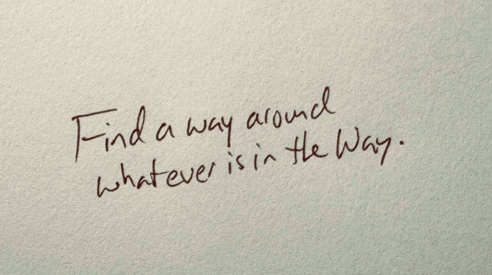
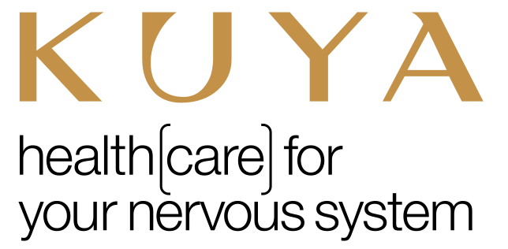

The Rise of New Wellness
Wellness used to mean just one or two simple things: going to the gym and eating healthy. But as the wellness industry has combusted, the market has become overrun with viral hacks and trendy pills all promising the big fix. Kuya’s stacked, multi-modality approach offered real depth comparatively, but it also left them struggling to claim a single, clear lane.

Deeper research revealed audiences were already paying premium prices for multiple separate wellness memberships, yet Kuya provided that entire ecosystem under one roof. The strategic hurdle was creating a position that balanced science-backed clinical credibility with their distinct, avant-garde bohemian identity, all while empowering the customer to take agency over their own health.
They couldn’t speak to the category because it didn’t exist yet. So we created our own. Kuya: Healthcare for your nervous system. By reframing their offerings from a random suite of services into a tailored, expert-guided path for nervous system regulation, we bridged the gap between clinical efficacy and holistic lifestyle wellness. Kuya. Remeet You.
